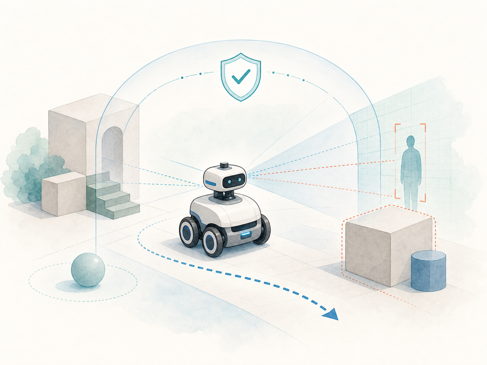
R/01Embodied Intelligence Safety 具身智能安全
Safe decision-making, continual adaptation, and robust perception for agents acting in physical environments. 面向物理环境智能体的安全决策、持续适应与鲁棒感知。
POSTDOCTORAL RESEARCHER · PEKING UNIVERSITY 博士后研究员 · 北京大学

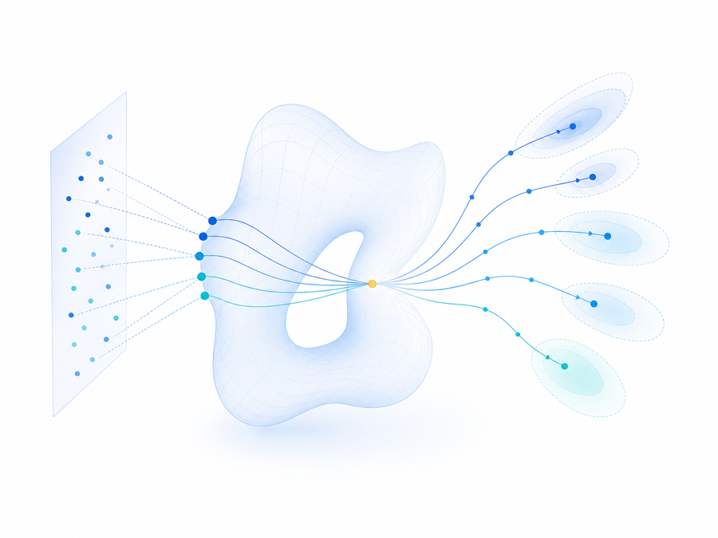
I build trustworthy intelligent systems at the intersection of embodied AI, multimodal learning, and content security. 我的研究聚焦于具身智能、多模态学习与内容安全的交叉领域， 致力于构建可信智能系统。
01 / ABOUT
I am a postdoctoral researcher at Peking University, co-advised by Assistant Professor Shanghang Zhang. I study safe embodied intelligence, trustworthy multimodal models, and verifiable content. 我现为北京大学博士后研究员，合作导师为仉尚航助理教授，研究方向为安全具身智能、可信多模态模型与可验证内容。
02 / EXPERIENCE

Peking University北京大学
Co-advisor: Asst. Prof. Shanghang Zhang 合作导师：仉尚航助理教授

Ningxia University宁夏大学
Computer vision research, teaching, graduate supervision, and grant development 开展计算机视觉研究、教学、研究生指导与科研项目申报
Yunsheng Intelligent Technology Co., Ltd.云圣智能科技有限公司
Full-time and internship roles · End-to-end autonomous flight for quadrotor drones under the VLA framework 历任正式 AI 算法研究员与研究实习生 · 面向四旋翼无人机的 VLA 端到端自主飞行研究
Peking University北京大学
Advisors: Dr. Xiaodong Xie and Academician Wen Gao 导师：解晓东研究员、高文院士
University of Chinese Academy of Sciences中国科学院大学
Advisor: Prof. Yishi Shi 导师：史祎诗教授

North China Electric Power University华北电力大学
03 / RESEARCH

R/01Safe decision-making, continual adaptation, and robust perception for agents acting in physical environments. 面向物理环境智能体的安全决策、持续适应与鲁棒感知。
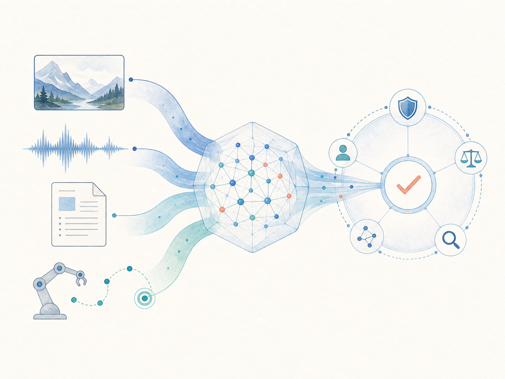
R/02Reliability, privacy, and generalization across visual, language, and action spaces. 研究视觉、语言与动作空间中的可靠性、隐私保护与泛化能力。
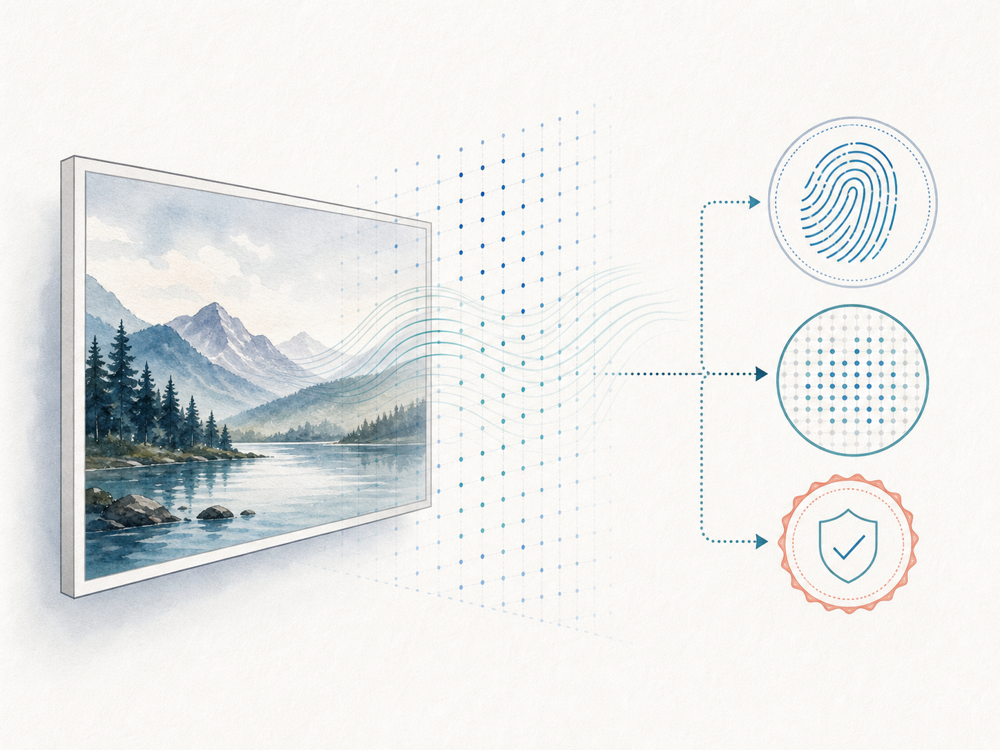
R/03Robust blind watermarking and content authentication under real-world distortions and black-box noise. 面向真实失真与黑盒噪声的鲁棒盲水印和内容认证。
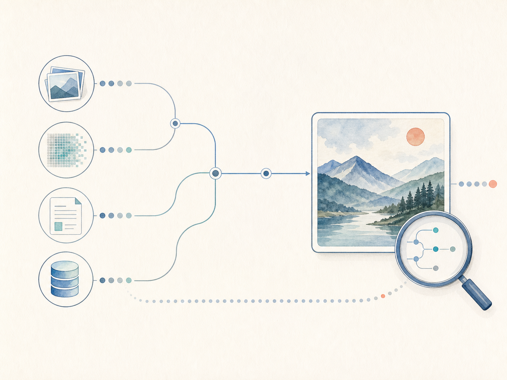
R/04Attribution, provenance, and forensic signals for synthetic images, video, and generative systems. 面向合成图像、视频与生成系统的归因、来源证明和取证信号。
04 / PUBLICATIONS
A selection of representative published and formally accepted papers; the full publication count follows Google Scholar. 以下仅展示部分代表性论文；首页论文总数以 Google Scholar 为准。
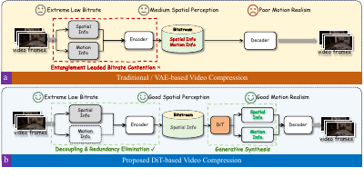
S. Wang, J. Xu, P. Jia, Z. Hao, S. Qian, F. Zhao, R. Ma, X. Ju, J. Tang, X. Xie, S. Zhang, H. Jia
Accepted for ACM Multimedia 2026 · arXiv:2607.19437
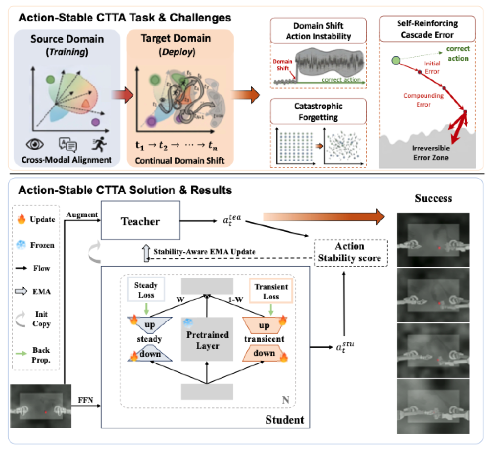
P. Jia, X. Chi, R. Ma, J. Xu, C.-K. Fan, S. Zhang
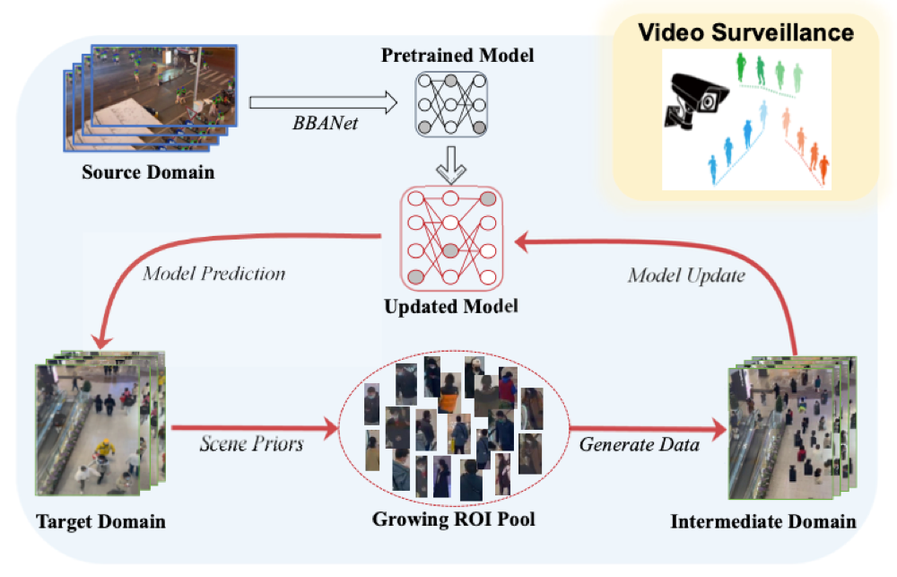
R. Ma, Y. Hou, C. Li, H. Jia, X. Xie
vol. 35, no. 7, pp. 6910–6925
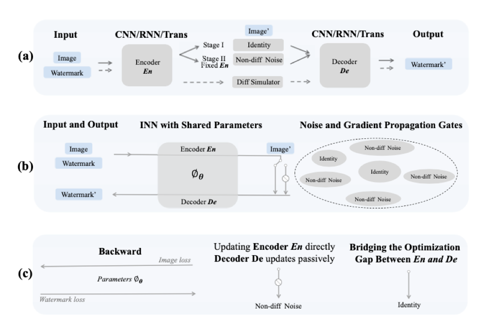
R. Ma, M. Guo, P. Jia, C. Li, Y. Hou, Y. Li, X. Xie, S. Zhang
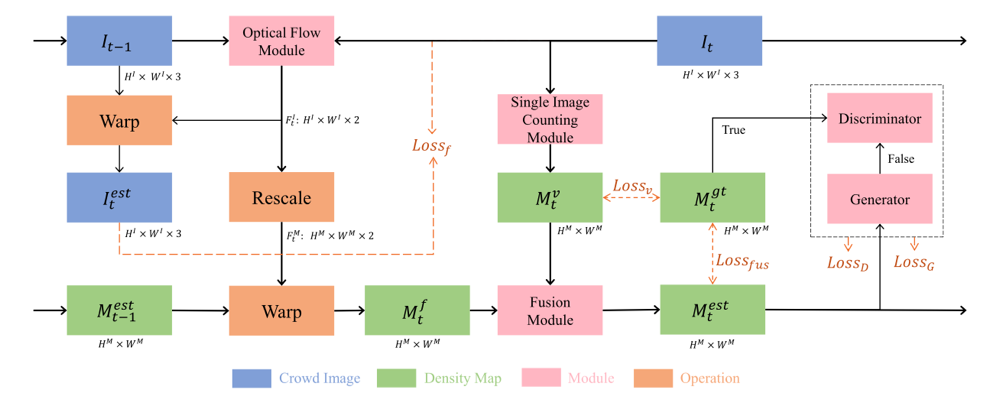
Y. Hou, S. Zhang, R. Ma, H. Jia, X. Xie
vol. 33, no. 9, pp. 5186–5199
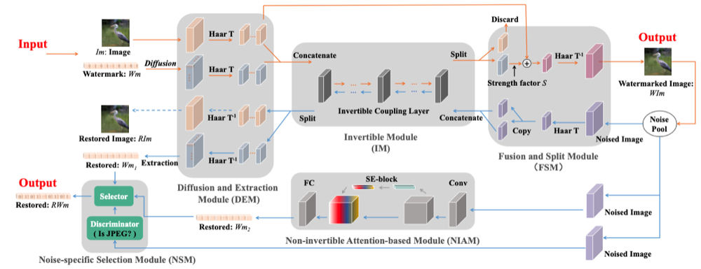
R. Ma, M. Guo, Y. Hou, F. Yang, Y. Li, H. Jia, X. Xie
Project & code 项目与代码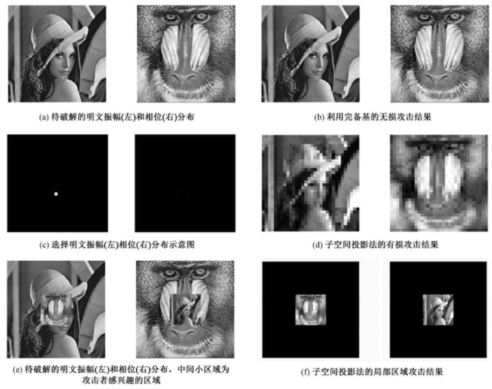
D. Miao, R. Ma, X. Sun, Y. Shi
vol. 39, no. 2, p. 165
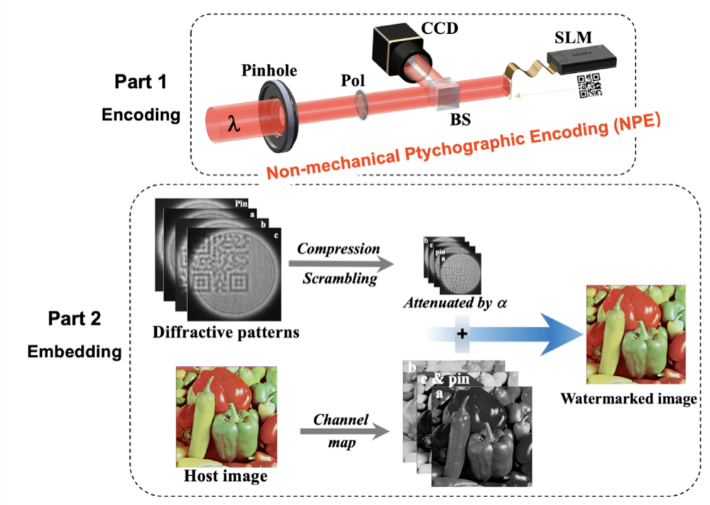
R. Ma, Y. Li, H. Jia, Y. Shi, X. Xie, T. Huang
vol. 141, article 106569
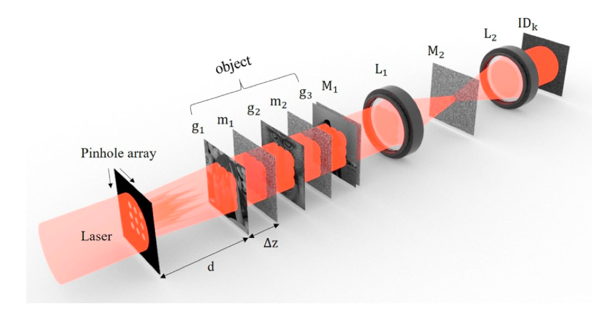
J. Zhang, D. Yang, R. Ma, Y. Shi
vol. 485, article 126762
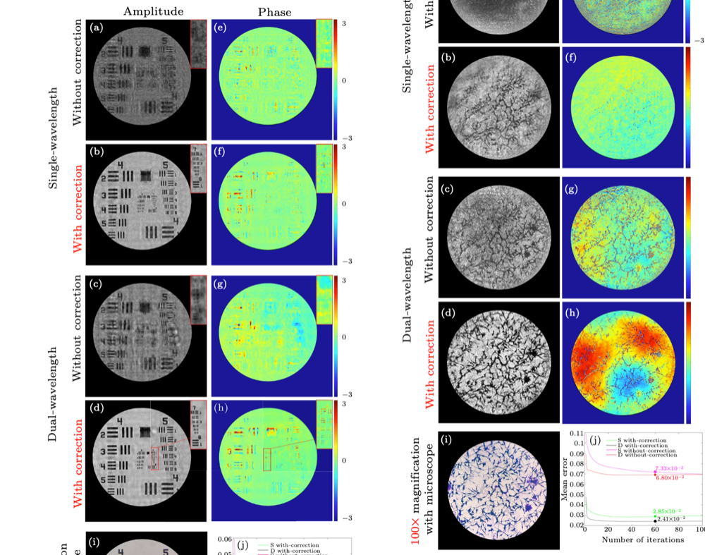
R. Ma, S. Zhang, T. Ruan, Y. Tao, Y. Shi
vol. 37, no. 4
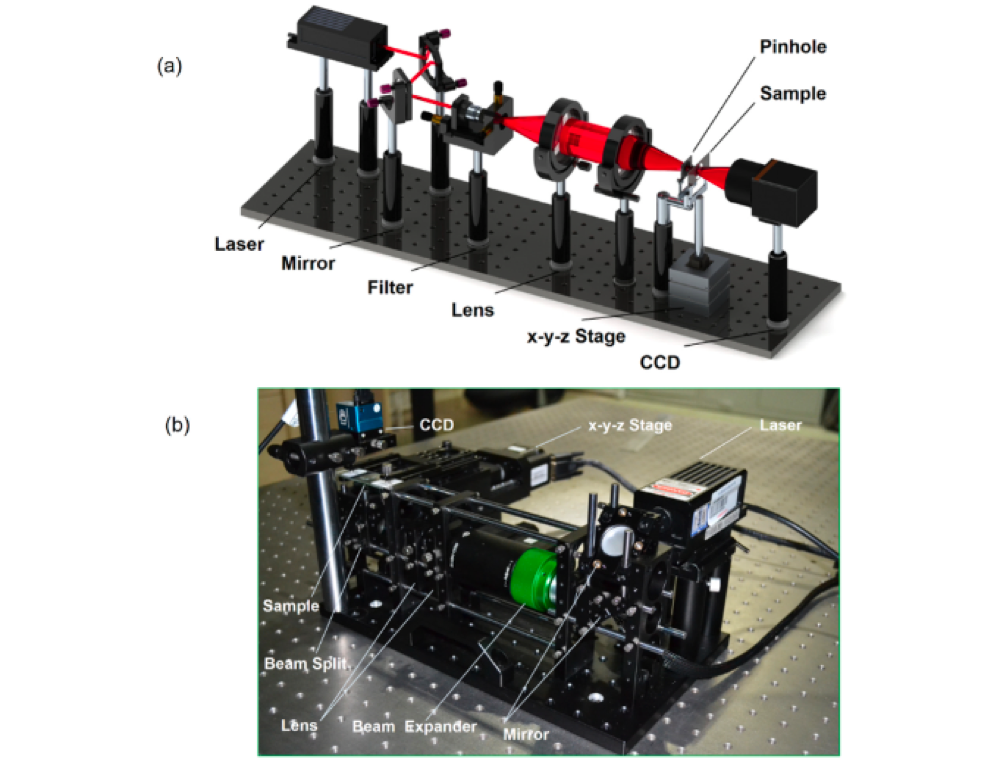
R. Ma, D. Yang, T. Yu, T. Li, Y. Shi
vol. 128, article 106053
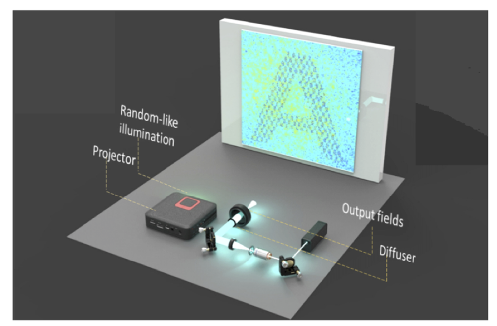
X. Sun, S. Zhang, R. Ma, Y. Tao, Y. Zhu, D. Yang, Y. Shi
vol. 28, no. 21
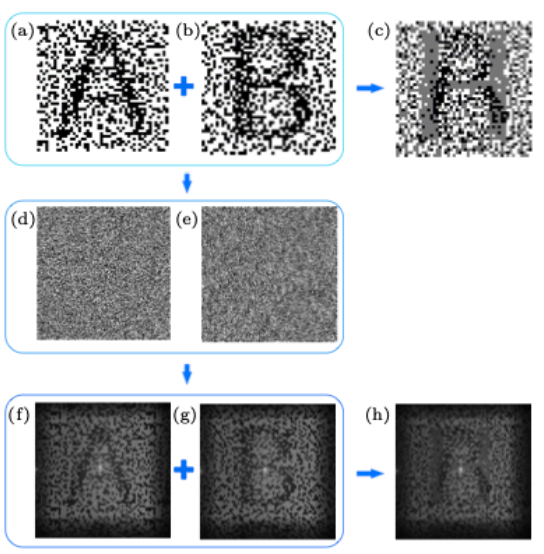
Y. Tao, D. Yang, R. Ma, Y. Zhu, Y. Shi
vol. 69, no. 14
05 / AUTHORIZED PATENTS
Seven granted Chinese invention patents in optical imaging and information security. 共 7 项中国发明专利获得授权，主要涉及光学成像与信息安全。
Inventor · University of Chinese Academy of Sciences发明人 · 中国科学院大学
Inventor · University of Chinese Academy of Sciences发明人 · 中国科学院大学
Inventor · University of Chinese Academy of Sciences发明人 · 中国科学院大学
Inventor · University of Chinese Academy of Sciences发明人 · 中国科学院大学
Inventor · University of Chinese Academy of Sciences发明人 · 中国科学院大学
Inventor · University of Chinese Academy of Sciences发明人 · 中国科学院大学
Inventor · University of Chinese Academy of Sciences发明人 · 中国科学院大学
06 / HONORS & FUNDING
07 / ACADEMIC SERVICE
REVIEWER FOR 审稿
MEMBERSHIPS 学术组织会员